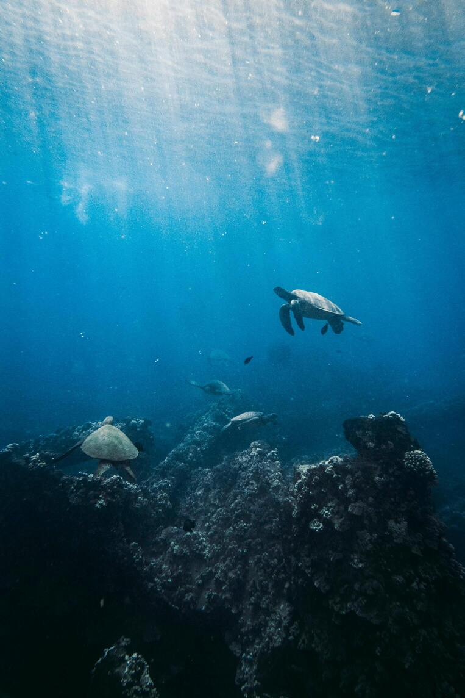

Costa Rica
Protección de Tortugas Marinas
En las playas del Pacífico costarricense, trabajamos en la protección de sitios de anidación de tortugas baula y verde. Nuestro equipo monitorea más de 15 km de costa durante la temporada de anidación, colaborando con guardaparques locales y realizando tareas de patrullaje nocturno para prevenir la caza furtiva.
Especies: Tortuga Baula, Tortuga Verde
Duración: 2019 - Presente
Impacto: 2,500+ nidos protegidos